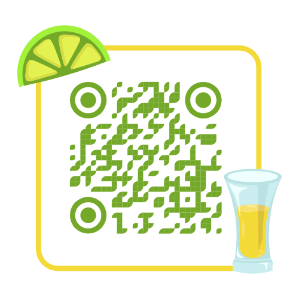

Hosting
El hosting, o alojamiento web, es un servicio que permite a individuos y organizaciones publicar sus sitios web en Internet. Consiste en proporcionar espacio en servidores conectados permanentemente a Internet, permitiendo el acceso a los sitios web las 24 horas del día, los 7 días de la semana.
Características clave del hosting incluyen:
- Espacio en Disco: Cantidad de almacenamiento disponible para archivos y datos del sitio web.
- Ancho de Banda: Volumen de datos transferidos entre el sitio web y los usuarios.
- Uptime: Porcentaje de tiempo que el servidor está activo y accesible.
- Seguridad: Medidas para proteger el sitio web contra amenazas cibernéticas.
- Soporte Técnico: Asistencia proporcionada por el proveedor para resolver problemas técnicos.
- Panel de Control: Herramienta para gestionar el alojamiento y configurar el sitio web.
Existen diferentes tipos de hosting como:
- Hosting Compartido: Varios sitios web comparten recursos en un mismo servidor.
- VPS (Servidor Privado Virtual): Recursos dedicados en un entorno virtualizado.
- Hosting Dedicado: Servidor completo dedicado exclusivamente a un sitio web.
- Hosting en la Nube: Uso de recursos de múltiples servidores para escalabilidad.
Códigos QR
Los códigos QR (Quick Response) son códigos de barras bidimensionales que almacenan información digitalmente. Están diseñados para ser escaneados fácilmente por dispositivos móviles, permitiendo a los usuarios acceder rápidamente a contenido en línea sin necesidad de escribir URL o datos manualmente.
Características de los códigos QR:
- Versatilidad: Pueden contener URL, texto, números de teléfono, y más.
- Accesibilidad: Facilitan el acceso rápido a información mediante escaneo.
- Interactividad: Usados en marketing, logística, y gestión de información.
- Facilidad de Generación: Herramientas en línea para crear códigos QR personalizados.
- Seguimiento y Análisis: Permite rastrear y analizar la eficacia de campañas digitales.
Los códigos QR son útiles para aplicaciones como:
- Enlaces a sitios web y redes sociales.
- Descargas de aplicaciones móviles.
- Autenticación y verificación de productos.
- Acceso a información detallada en puntos de venta.
WordPress
WordPress es un sistema de gestión de contenido (CMS) de código abierto y gratuito, utilizado para crear y gestionar diversos tipos de sitios web, desde blogs personales hasta complejas tiendas en línea. Con una interfaz intuitiva y una gran comunidad de usuarios y desarrolladores, WordPress se destaca por su facilidad de uso y su capacidad de personalización.
Características y ventajas de WordPress incluyen:
- Fácil de Usar: Interfaz amigable que permite a usuarios sin experiencia técnica gestionar contenido.
- Personalización: Amplia variedad de temas y plugins para adaptar el diseño y funcionalidad del sitio.
- SEO Amigable: Herramientas integradas para mejorar la visibilidad en motores de búsqueda.
- Comunidad Activa: Soporte continuo y actualizaciones regulares de seguridad.
- Escalabilidad: Capacidad para manejar desde sitios personales hasta grandes portales corporativos.
Imagen 1

Tríptico QR

Video QR

PDF QR